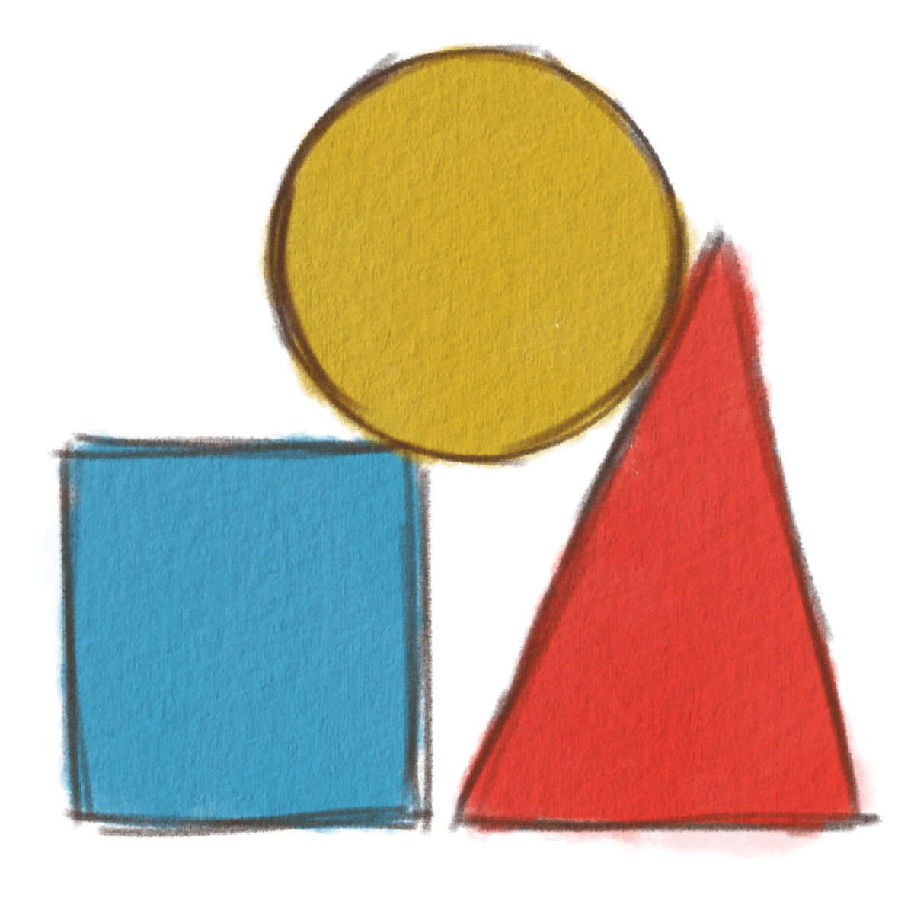

Shapes are everywhere! We can find them in toys, buildings, food, and many other everyday objects. Can you look at an object to your right and identify its shape?

A circle is a round shape with no corners or straight sides. It's made entirely with a curved line and it looks like a ring. Examples of objects that are circles are coins, wheels, clocks, and balls.
A square is a shape with four sides. Each of its sides are the same length. Examples of objects that are square are chess boards, boxes, and floor tiles.
A triangle has three straight sides and three corners. Some examples of objects that are triangle shaped are pizza slices, road signs, and some rooftops.
A rectangle has four corners and four sides, like a square. But rectangles two sides of a rectangle are longer than the other two sides. Think of a square, but longer. Examples of objects that are square are doors, books, television screens, and a school bus.

1. Which shape has three sides
Correct answer: B. Triangle
A triangle has three straight sides and three corners. Some examples of objects that are triangle shaped are pizza slices, road signs, and some rooftops.
2. Which shape has four equal sides?
Correct answer: A. Square
A square is a shape with four sides. Each of its sides are the same length. Examples of objects that are square are chess boards, boxes, and floor tiles.
3. What shape can you find on a clock?
©2026
Made by BMMA101LGBT